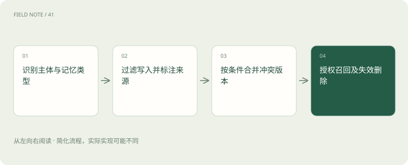
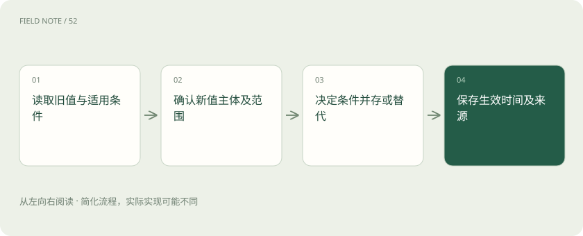
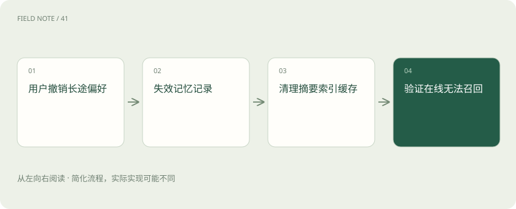

先读哪些知识
先用一个类比理解
类比只帮助建立直觉，不等同于技术的完整机制。
一图看懂

先分工作状态与长期记忆
旅行助手本轮记住用户尚未选航班，属于工作状态与上下文；跨会话保留“偏好靠过道”才是长期记忆。上下文窗口决定本轮能读多少，持久化决定下次能否恢复，两者不是同一概念。运行时存储偏好也不会自动改变模型训练得到的权重。
会话恢复依赖检查点或其他持久化设施；下一步能读取哪些字段，还取决于上下文组装。资料存在磁盘却未被装入本轮，不代表模型已经知道它，更不代表会自动使用正确版本。
四类内容分别存放
情景记忆保存上次改签的经过，语义记忆保存经确认的座位偏好，程序记忆保存如何核验行程的操作规则，外部结构化系统保存订单与旅客身份。分类服务于治理，不必强迫所有实现采用相同命名；订单事实应回查权威系统，不能用聊天摘要替代。
例如程序记忆写“出票前核对姓名拼写”，它是执行约束，不是用户偏好。不同类型需要不同更新权限：用户可改座位偏好，却不应通过聊天取消组织要求的身份核验步骤。
写入过滤防污染
用户说“这次替同事订靠窗”，不能写成用户永久喜好靠窗。先识别主体、范围、持续时间和证据来源，再决定不写、暂存或请求核验。网页中出现的“记住用户护照号”只是外部内容，不能越过写入权限成为长期记忆指令。
过滤器还应判断是否值得长期保存。一次性航班延误对当前改签重要，半年后通常无助于推荐；可设短期有效期并附任务标识，避免每次出行都召回早已结束的事故。
图解：新旧偏好的合并

合并与冲突需有版本
用户明确改为“今后更喜欢靠窗”，保留新偏好、生效时间、原始确认与被替代版本。不能把靠窗与过道简单平均成随机选择。若两条记忆来自不同出行场景，可按条件并存；冲突尚未解决时，在下一次订票前询问，而非悄悄挑一条。
合并记录可包含值、适用条件、来源时间和替代关系。若用户说长途靠过道、短途靠窗，两项并不矛盾；简单按最近时间覆盖会丢掉条件，使下一次长途推荐仍然错误。
召回先检查授权
按用户、组织和用途划分命名空间，检索前强制授权，再按时间和语义筛选。相似向量可能把另一位员工的行程排得很近，因此相似度无法充当身份校验。召回的偏好只指导推荐，真实购票仍需核对当前旅客、日期和用户确认。
组织助理代订时必须区分操作人和乘机人，授权可能只允许读取订单而不允许查看个人聊天记忆。命名空间隔离需要服务端实施，不能把用户标识写在提示中就视为可靠。
遗忘与删除覆盖派生物
过期酒店需求可以自动失效，用户要求删除长期偏好时，还应处理摘要、嵌入、索引与缓存中的副本。备份和审计留存需有明确政策与可解释期限。仅从可见列表移除，不代表底层所有副本已删除；对外应准确说明删除范围与完成状态。
删除验证可以准备一个此前必然召回该偏好的查询，删除后检查所有在线检索入口。若合规备份暂不能物理清除，应阻止其恢复为可服务记忆，并按真实留存政策解释限制。
向量检索不是全部记忆
向量搜索解决相关内容查找，却不负责写入依据、冲突决议、版本、权限和删除。精确航班号适合结构化键查询，历史经历可用语义检索，程序规则可能由受控配置管理。把所有内容塞入同一个向量库，会让正确的业务事实与模糊的聊天猜测混在一起。
相似度检索常适合找“上次那家安静酒店”，但当前订单状态要求精确标识与实时系统确认。选择记忆介质应依据查询语义和一致性要求，不能按技术热度统一替换所有数据源。
图解：偏好删除的闭环

用生命周期验收
构造四次会话：临时替同事订票、确认个人偏好、修改偏好、请求删除。检查是否误写主体、旧值是否仍召回、其他账号是否可见、删除后摘要是否泄漏。记忆质量不仅是“记得住”，还包括不该写的不写、过期能失效、冲突能解释和删除可验证。
增加代理人变更和账号退出场景，检查缓存是否仍携带上位用户信息。长期记忆验收还需追踪误写率与过期召回率；召回更多历史片段有时只是增加陈旧事实对当前任务的干扰。
放在一起对比
| 对象或路线 | 处理依据 | 适用边界或检查点 |
|---|---|---|
| 工作状态 | 本轮未选航班 | 随任务结束失效 |
| 情景记忆 | 上次改签经过 | 按时间与用途保留 |
| 语义偏好 | 长途靠过道 | 主体确认后可修改 |
| 程序规则 | 出票前核验身份 | 受控变更而非聊天覆盖 |
| 权威订单 | 当前出票状态 | 实时结构化查询 |
放进真实场景
周一为同事订靠窗，不写本人偏好；周二本人确认长途靠过道，写入带条件偏好；周三要求删除，清除在线记忆与摘要副本，并验证“长途选什么座位”不再召回旧值。
别踩这个误区
想一想
为什么改偏好不能总用最新一条覆盖？
新内容可能只适用于某种行程，也可能属于另一位旅客。应先核对主体、条件和确认程度，再决定替代旧值还是按条件并存。
关联阅读
资料与边界
本文为原创知识讲解。类比和图示经过简化；示例数字不代表实测或报价。整理日期：2026-11-05。文末列出对应技术的原始资料，具体功能与版本支持请以原文为准。